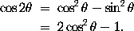
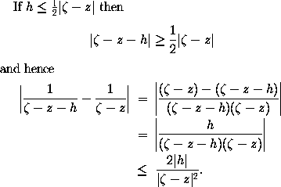

Consider the problem of typesetting the formula
It is necessary to ensure that the = signs are aligned with one another. In LaTeX, such a formula is typeset using the
eqnarray* environment. The above example was obtained by
typing the lines
\begin{eqnarray*}
\cos 2\theta & = & \cos^2 \theta - \sin^2 \theta \\
& = & 2 \cos^2 \theta - 1.
\end{eqnarray*}
Note the use of the special character & as an
alignment tab. When the formula is typeset, the part of
the second line of the formula beginning with an occurrence of
& will be placed immediately beneath that part of
the first line of the formula which begins with the corresponding
occurrence of &. Also \\ is used to
separate the lines of the formula.
Although we have placed corresponding occurrences of &
beneath one another in the above example, it is not necessary to
do this in the input file. It was done in the above example merely
to improve the appearance (and readability) of the input file.
The more complicated example
was obtained by typing
If $h \leq \frac{1}{2} |\zeta - z|$ then
\[ |\zeta - z - h| \geq \frac{1}{2} |\zeta - z|\]
and hence
\begin{eqnarray*}
\left| \frac{1}{\zeta - z - h} - \frac{1}{\zeta - z} \right|
& = & \left|
\frac{(\zeta - z) - (\zeta - z - h)}{(\zeta - z - h)(\zeta - z)}
\right| \\ & = &
\left| \frac{h}{(\zeta - z - h)(\zeta - z)} \right| \\
& \leq & \frac{2 |h|}{|\zeta - z|^2}.
\end{eqnarray*}
The asterisk in eqnarray* is put there to suppress the
automatic equation numbering produced by LaTeX. If you wish for
an automatically numbered multiline formula, you should use
\begin{eqnarray} and \end{eqnarray}.